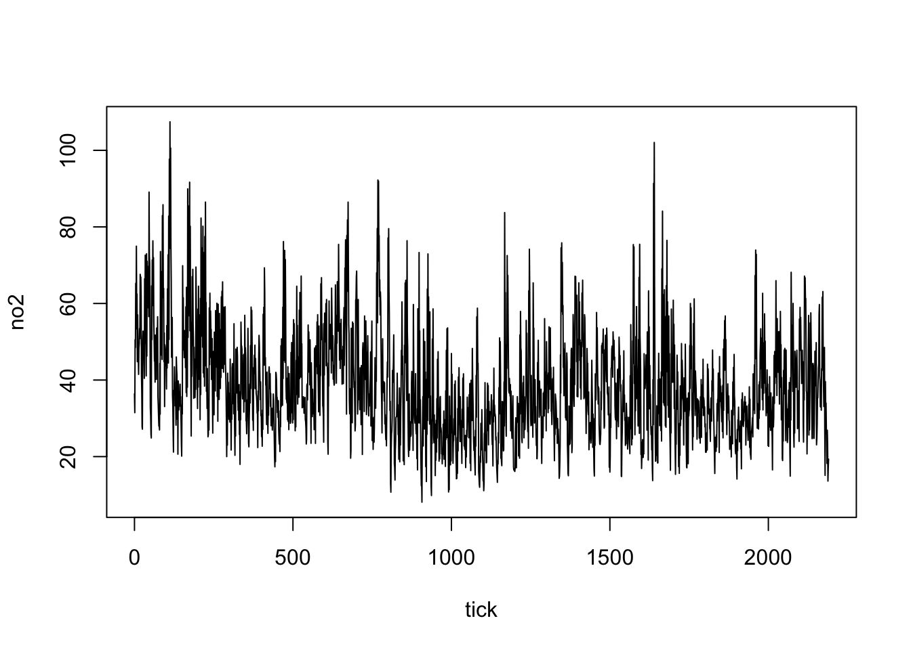

── Attaching core tidyverse packages ──────────────────────── tidyverse 2.0.0 ──
✔ dplyr 1.1.2 ✔ readr 2.1.4
✔ forcats 1.0.0 ✔ stringr 1.5.0
✔ ggplot2 3.4.4 ✔ tibble 3.2.1
✔ lubridate 1.9.2 ✔ tidyr 1.3.0
✔ purrr 1.0.2
── Conflicts ────────────────────────────────────────── tidyverse_conflicts() ──
✖ dplyr::filter() masks stats::filter()
✖ dplyr::lag() masks stats::lag()
ℹ Use the conflicted package (<http://conflicted.r-lib.org/>) to force all conflicts to become errors
library(data.table)
Attaching package: 'data.table'
The following objects are masked from 'package:lubridate':
hour, isoweek, mday, minute, month, quarter, second, wday, week,
yday, year
The following objects are masked from 'package:dplyr':
between, first, last
The following object is masked from 'package:purrr':
transpose
library(janitor)
Attaching package: 'janitor'
The following objects are masked from 'package:stats':
chisq.test, fisher.test
library(arrow)
Attaching package: 'arrow'
The following object is masked from 'package:lubridate':
duration
The following object is masked from 'package:utils':
timestamp
get the files
# raw_data <- fread("no2_export_people.csv", quote = "") |> # as_tibble() |> # clean_names() |> # mutate(where = if_else(tick %% 2 == 0, "Home", "Work"))raw_data <-read_parquet("no2.parquet") |>as_tibble() |>clean_names() |>mutate(where =if_else(tick %%2==0, "Home", "Work"))# Example data framedf <-data.frame(tick =0:2190)# Mutate to add a date columndf <- df %>%mutate(date =as.Date("2019-01-01") +days(tick %/%2))raw_data |>left_join(df, by ="tick") -> results
results |>filter(who ==3727) |>with(plot(tick,no2, type ="l"))
results |>filter(who ==4897) |>with(plot(tick,no2, type ="l"))

results |>filter(who ==1294) |>with(plot(tick,no2, type ="l"))
##39.3 µg/m3results |>rename(origin = districtname,destination = destinationname) |>group_by(origin) |>summarise(no2 =mean(no2, na.rm = T)) -> boro_home_no2boro_home_no2 |>mutate(ratio = no2/39.3) |>mutate(mycolor =ifelse(ratio >=1, "Above city average", "Below city average")) |>ggplot() +geom_segment( aes(x=reorder(origin, ratio), xend=origin, y=0, yend=ratio, color=mycolor), size=1.3, alpha=0.9) +#geom_bar(stat = "identity", fill = "steelblue") +theme_minimal() +labs(x ="", y ="NO2 Ratio", title ="NO2 Ratios Across Different Origins") +coord_flip() +# Flips the coordinates to make the chart horizontal; useful for readability with many categoriestheme(legend.position ="bottom",legend.title =element_blank()) # Adjust text angle and justification if kept vertical
results |>rename(origin = districtname,destination = destinationname) |>group_by(destination) |>summarise(no2 =mean(no2, na.rm = T)) -> boro_work_no2boro_work_no2 |>mutate(ratio = no2/39.3) |>mutate(mycolor =ifelse(ratio >=1, "Above city average", "Below city average")) |>ggplot() +geom_segment( aes(x=reorder(destination, ratio), xend=destination, y=0, yend=ratio, color=mycolor), size=1.3, alpha=0.9) +theme_minimal() +labs(x ="", y ="NO2 Ratio", title ="NO2 Ratios Across London Boroughs") +coord_flip() +# Flips the coordinates to make the chart horizontal; useful for readability with many categoriestheme(legend.position ="bottom",legend.title =element_blank()) # Adjust text angle and justification if kept vertical
library(sf)
Linking to GEOS 3.11.0, GDAL 3.5.3, PROJ 9.1.0; sf_use_s2() is TRUE
london <-read_sf("../Data/London_Boundary_cleaned.shp")london |>left_join(boro_home_no2, by =c("NAME"="origin")) |>mutate(ratio = no2/39.3) |>ggplot() +geom_sf(aes(fill = ratio)) +coord_sf(crs =27700) +scale_fill_viridis_c() +theme_minimal()